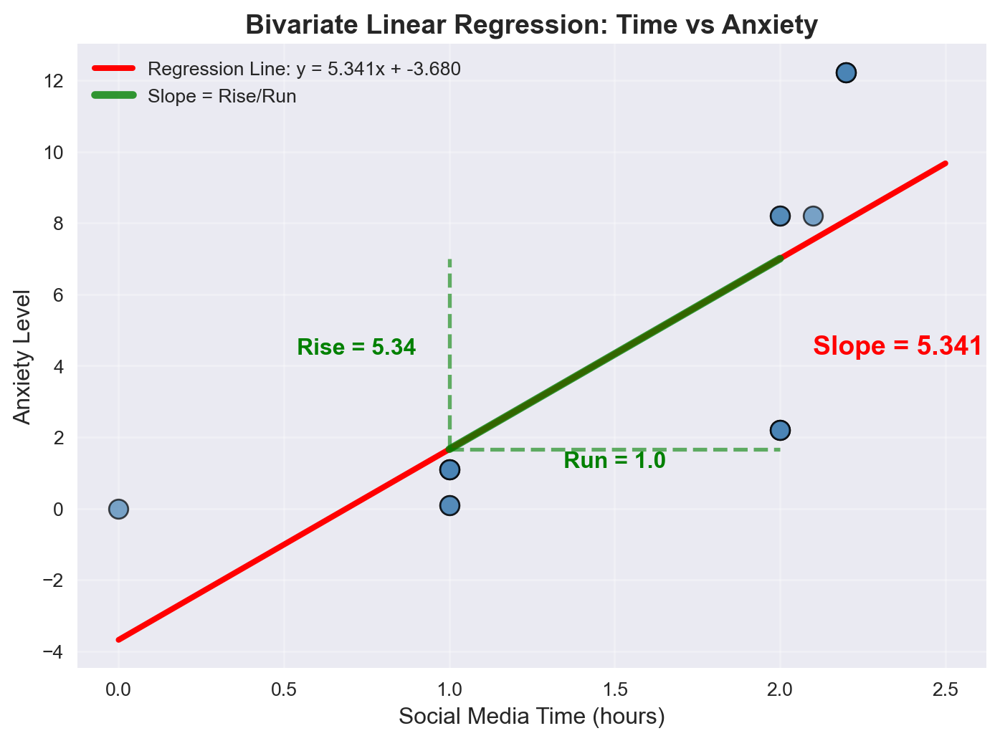
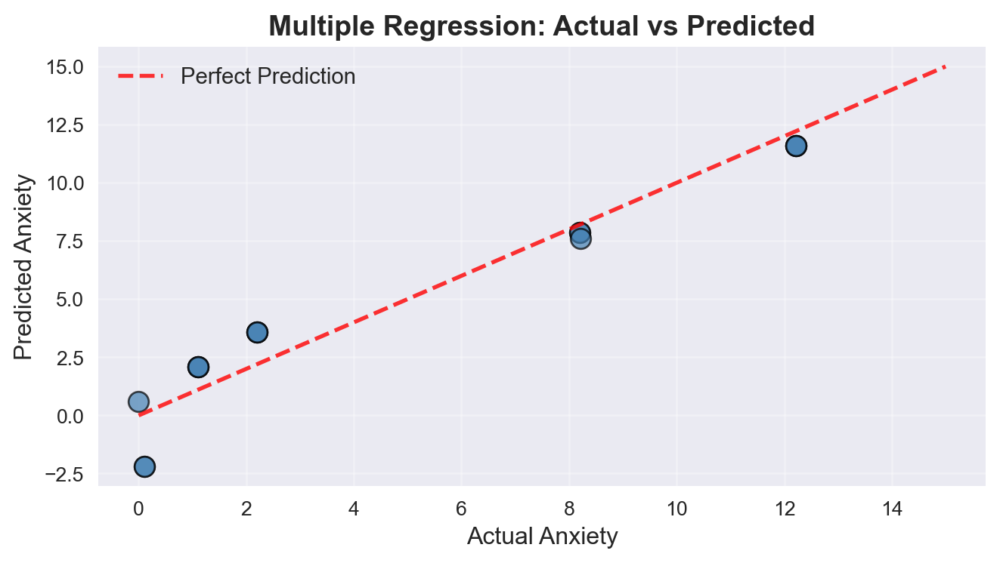
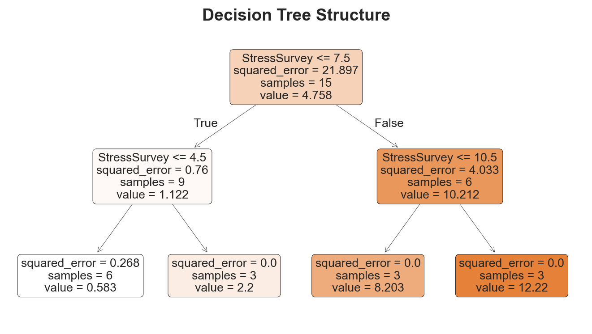
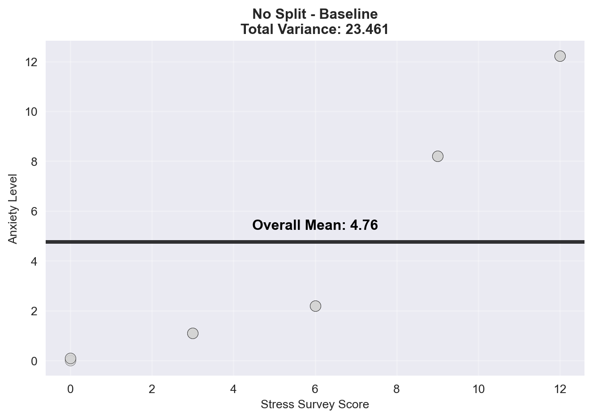
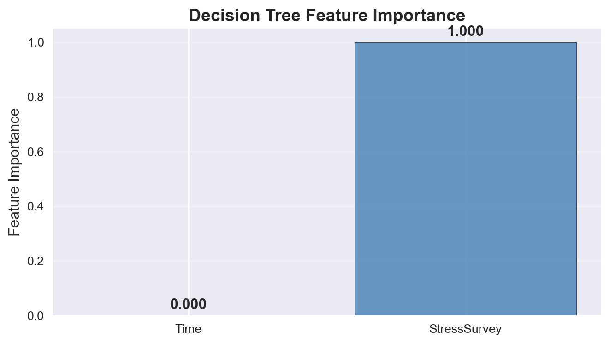
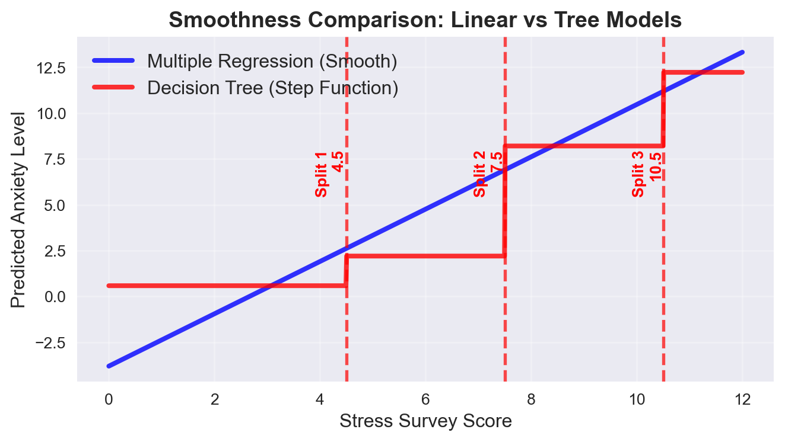
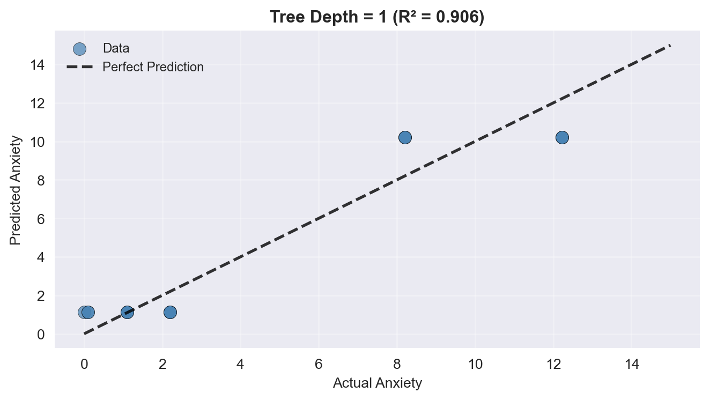

Decision trees represent a fundamental shift from linear models to non-linear, rule-based approaches. While linear regression assumes relationships can be captured by straight lines, decision trees recognize that real-world relationships often require more flexible, branching logic.
Linear Models
Assume relationships follow straight lines with constant slopes.
Example: Anxiety increases by 0.1 units for every minute of social media use.
Decision Trees
Split data into distinct groups based on threshold values.
Example: If social media time > 2 hours, then anxiety is high; otherwise, anxiety depends on other factors.
Starting with Linear Regression: Understanding Slope
Before diving into decision trees, let’s establish a foundation by examining how linear regression interprets relationships through the concept of slope.
The Anxiety and Social Media Dataset
Consider a study examining the relationship between social media usage and anxiety levels. We have data on time spent on social media (in minutes) and corresponding anxiety levels measured by fMRI activity.
data
Table 1: Anxiety, social media time, and stress survey dataset
Stress
StressSurvey
Time
Anxiety
0
0
0
0.0
0.00
1
0
0
1.0
0.10
2
0
0
1.0
0.10
3
1
3
1.0
1.10
4
1
3
1.0
1.10
5
1
3
1.0
1.10
6
2
6
2.0
2.20
7
2
6
2.0
2.20
8
2
6
2.0
2.20
9
8
9
2.0
8.20
10
8
9
2.0
8.20
11
8
9
2.1
8.21
12
12
12
2.2
12.22
13
12
12
2.2
12.22
14
12
12
2.2
12.22
Visualizing the Bivariate Relationship: Time vs Anxiety
# Create figure with subplotsfig, (ax1, ax2) = plt.subplots(1, 2, figsize=(15, 6))# Left plot: Scatter plot with regression lineax1.scatter(data['Time'], data['Anxiety'], color='steelblue', s=100, alpha=0.7, edgecolors='black', linewidth=1)# Fit linear regressionslope, intercept = np.polyfit(data['Time'], data['Anxiety'], 1)line_x = np.linspace(0, 2.5, 100)line_y = slope * line_x + interceptax1.plot(line_x, line_y, 'r-', linewidth=3, label=f'Regression Line: y = {slope:.3f}x + {intercept:.3f}')# Add slope visualizationx1, x2 =1.0, 2.0y1, y2 = slope * x1 + intercept, slope * x2 + interceptax1.plot([x1, x2], [y1, y2], 'g-', linewidth=4, alpha=0.8, label='Slope = Rise/Run')ax1.plot([x1, x1], [y1, y2], 'g--', linewidth=2, alpha=0.6)ax1.plot([x1, x2], [y1, y1], 'g--', linewidth=2, alpha=0.6)# Add slope annotationax1.annotate(f'Rise = {y2-y1:.2f}', xy=(x1-0.1, (y1+y2)/2), fontsize=12, ha='right', color='green', weight='bold')ax1.annotate(f'Run = {x2-x1}', xy=((x1+x2)/2, y1-0.5), fontsize=12, ha='center', color='green', weight='bold')ax1.annotate(f'Slope = {slope:.3f}', xy=(x2+0.1, (y1+y2)/2), fontsize=14, ha='left', color='red', weight='bold')ax1.set_xlabel('Social Media Time (hours)', fontsize=12)ax1.set_ylabel('Anxiety Level', fontsize=12)ax1.set_title('Bivariate Linear Regression: Time vs Anxiety', fontsize=14, weight='bold')ax1.legend(fontsize=10)ax1.grid(True, alpha=0.3)# Right plot: Slope interpretationax2.bar(['Current Time', 'Time + 1 hour'], [slope *1.0+ intercept, slope *2.0+ intercept], color=['lightcoral', 'lightblue'], edgecolor='black', linewidth=2)ax2.set_ylabel('Predicted Anxiety Level', fontsize=12)ax2.set_title('Slope Interpretation: 1-hour increase', fontsize=14, weight='bold')ax2.grid(True, alpha=0.3, axis='y')# Add value annotations on barsfor i, (x, y) inenumerate([(0, slope *1.0+ intercept), (1, slope *2.0+ intercept)]): ax2.annotate(f'{y:.2f}', xy=(x, y), ha='center', va='bottom', fontsize=12, weight='bold')plt.tight_layout()plt.show()print(f"Bivariate Linear Regression Results (Time only):")print(f"Slope: {slope:.4f} (anxiety change per hour)")print(f"Intercept: {intercept:.4f}")print(f"Interpretation: For every additional hour of social media use, anxiety changes by {slope:.4f} units")print(f"True coefficient should be: 0.1 (positive!)")

Figure 1: Bivariate linear relationship between social media time and anxiety levels
Bivariate Linear Regression Results (Time only):
Slope: 5.3406 (anxiety change per hour)
Intercept: -3.6801
Interpretation: For every additional hour of social media use, anxiety changes by 5.3406 units
True coefficient should be: 0.1 (positive!)
The Multiple Regression Problem: When Linear Models Fail
Now let’s see what happens when we add the StressSurvey variable to control for stress levels:
from sklearn.linear_model import LinearRegressionfrom sklearn.metrics import r2_scoreimport statsmodels.api as sm# Multiple regression: Anxiety ~ Time + StressSurveyX = data[['Time', 'StressSurvey']]y = data['Anxiety']# Fit multiple regressionlr_multi = LinearRegression()lr_multi.fit(X, y)multi_predictions = lr_multi.predict(X)# Get coefficientstime_coef = lr_multi.coef_[0]stress_coef = lr_multi.coef_[1]intercept = lr_multi.intercept_# Create visualizationfig, (ax1, ax2) = plt.subplots(1, 2, figsize=(16, 6))# Left plot: Actual vs Predictedax1.scatter(data['Anxiety'], multi_predictions, color='steelblue', s=100, alpha=0.7, edgecolors='black', linewidth=1)ax1.plot([0, 15], [0, 15], 'r--', linewidth=2, alpha=0.8, label='Perfect Prediction')ax1.set_xlabel('Actual Anxiety', fontsize=12)ax1.set_ylabel('Predicted Anxiety', fontsize=12)ax1.set_title('Multiple Regression: Actual vs Predicted', fontsize=14, weight='bold')ax1.legend(fontsize=11)ax1.grid(True, alpha=0.3)# Right plot: Coefficient comparisoncoefficients = ['Time Coefficient', 'StressSurvey Coefficient']true_values = [0.1, 1.0] # True coefficientsestimated_values = [time_coef, stress_coef]x = np.arange(len(coefficients))width =0.35bars1 = ax2.bar(x - width/2, true_values, width, label='True Coefficients', color='lightgreen', alpha=0.8, edgecolor='black')bars2 = ax2.bar(x + width/2, estimated_values, width, label='Estimated Coefficients', color='lightcoral', alpha=0.8, edgecolor='black')ax2.set_xlabel('Variables', fontsize=12)ax2.set_ylabel('Coefficient Value', fontsize=12)ax2.set_title('Coefficient Comparison: True vs Estimated', fontsize=14, weight='bold')ax2.set_xticks(x)ax2.set_xticklabels(coefficients)ax2.legend(fontsize=11)ax2.grid(True, alpha=0.3, axis='y')# Add value labels on barsfor bars in [bars1, bars2]:for bar in bars: height = bar.get_height() ax2.annotate(f'{height:.3f}', xy=(bar.get_x() + bar.get_width()/2, height), xytext=(0, 3), textcoords="offset points", ha='center', va='bottom', fontsize=10, weight='bold')plt.tight_layout()plt.show()print("Multiple Regression Results:")print("="*40)print(f"Anxiety = {intercept:.3f} + {time_coef:.3f}*Time + {stress_coef:.3f}*StressSurvey")print(f"Time coefficient: {time_coef:.4f} (should be +0.1)")print(f"StressSurvey coefficient: {stress_coef:.4f} (should be +1.0)")print(f"R¬≤ = {r2_score(y, multi_predictions):.4f}")print(f"\nüö® PROBLEM: Time coefficient is {time_coef:.4f} instead of +0.1!")print("This is the 'garbage can regression' problem in action.")

Figure 2: Multiple regression analysis showing the garbage can regression problem
Multiple Regression Results:
========================================
Anxiety = 0.589 + -2.780*Time + 1.427*StressSurvey
Time coefficient: -2.7799 (should be +0.1)
StressSurvey coefficient: 1.4269 (should be +1.0)
R² = 0.9350
üö® PROBLEM: Time coefficient is -2.7799 instead of +0.1!
This is the 'garbage can regression' problem in action.
The Garbage Can Regression Problem
The multiple regression shows a negative coefficient for Time when the true relationship should be positive! This happens because:
StressSurvey is a non-linear proxy for the true Stress variable
Linear regression assumes linearity but the relationship is non-linear
The model compensates by giving Time a negative coefficient to “correct” for the non-linear StressSurvey effect
This is exactly why we need decision trees - they can capture these non-linear relationships without making false assumptions about linearity.
Decision Trees: A Non-Linear Alternative
Decision trees offer a fundamentally different approach to modeling relationships. Instead of assuming linearity, they partition data into distinct groups based on threshold values.
What is a Decision Tree?
One-Liner Definition
A decision tree is a model that splits data into groups using a series of binary decisions, where each split is based on a threshold value of a feature.
The Tree Structure
Decision trees consist of:
Root Node: The starting point containing all data
Internal Nodes: Decision points that split data based on conditions
Leaf Nodes: Terminal nodes that provide predictions
Branches: Paths connecting nodes based on decision outcomes
Building a Decision Tree for Anxiety Data
Let’s see how a decision tree would approach our anxiety data using both Time and StressSurvey:
# Create and fit decision tree with both featurestree_model = DecisionTreeRegressor(max_depth=3, random_state=42)tree_model.fit(data[['Time', 'StressSurvey']], data['Anxiety'])# Create visualizationfig, (ax1, ax2) = plt.subplots(1, 2, figsize=(20, 8))# Left plot: Tree structureplot_tree(tree_model, feature_names=['Time', 'StressSurvey'], filled=True, rounded=True, fontsize=10, ax=ax1)ax1.set_title('Decision Tree Structure', fontsize=14, weight='bold')# Right plot: Tree predictions vs actual dataax2.scatter(data['Anxiety'], tree_model.predict(data[['Time', 'StressSurvey']]), color='steelblue', s=100, alpha=0.7, edgecolors='black', linewidth=1, label='Tree Predictions')ax2.plot([0, 15], [0, 15], 'r--', linewidth=2, alpha=0.8, label='Perfect Prediction')ax2.set_xlabel('Actual Anxiety', fontsize=12)ax2.set_ylabel('Predicted Anxiety', fontsize=12)ax2.set_title('Decision Tree: Actual vs Predicted', fontsize=14, weight='bold')ax2.legend(fontsize=12)ax2.grid(True, alpha=0.3)plt.tight_layout()plt.show()# Print tree rulesprint("Decision Tree Rules:")print("="*50)tree_rules = []def extract_rules(tree, feature_names, node=0, depth=0, rule=""):if tree.tree_.children_left[node] == tree.tree_.children_right[node]: # Leaf node prediction = tree.tree_.value[node][0][0] tree_rules.append(f"{rule} → Anxiety = {prediction:.2f}")else: feature = feature_names[tree.tree_.feature[node]] threshold = tree.tree_.threshold[node] extract_rules(tree, feature_names, tree.tree_.children_left[node], depth+1, f"{rule} AND {feature} <= {threshold:.1f}"if rule elsef"{feature} <= {threshold:.1f}") extract_rules(tree, feature_names, tree.tree_.children_right[node], depth+1, f"{rule} AND {feature} > {threshold:.1f}"if rule elsef"{feature} > {threshold:.1f}")extract_rules(tree_model, ['Time', 'StressSurvey'])for i, rule inenumerate(tree_rules, 1):print(f"{i}. {rule}")# Calculate R² for comparisontree_predictions = tree_model.predict(data[['Time', 'StressSurvey']])tree_r2 = r2_score(data['Anxiety'], tree_predictions)print(f"\nDecision Tree R² = {tree_r2:.4f}")

Figure 3: Decision tree for anxiety prediction using Time and StressSurvey
Decision Tree Rules:
==================================================
1. StressSurvey <= 7.5 AND StressSurvey <= 4.5 AND StressSurvey <= 1.5 → Anxiety = 0.07
2. StressSurvey <= 7.5 AND StressSurvey <= 4.5 AND StressSurvey > 1.5 → Anxiety = 1.10
3. StressSurvey <= 7.5 AND StressSurvey > 4.5 → Anxiety = 2.20
4. StressSurvey > 7.5 AND Time <= 2.1 AND Time <= 2.0 → Anxiety = 8.20
5. StressSurvey > 7.5 AND Time <= 2.1 AND Time > 2.0 → Anxiety = 8.21
6. StressSurvey > 7.5 AND Time > 2.1 → Anxiety = 12.22
Decision Tree R² = 1.0000
How Decision Trees Work: The CART Algorithm
The Classification and Regression Trees (CART) algorithm builds trees through a recursive process:
Find Best Split: For each feature, find the threshold that best separates the data
Choose Best Feature: Select the feature and threshold that minimize variance (regression) or Gini impurity (classification)
Split Data: Create two child nodes based on the chosen split
Repeat: Continue splitting until stopping criteria are met
# Create a simple example to show splitting process using StressSurveyfig, axes = plt.subplots(2, 2, figsize=(15, 12))axes = axes.ravel()# Simulate different split points for StressSurveysplit_points = [3, 6, 9, 12]colors = ['red', 'blue', 'green', 'orange']for i, (split, color) inenumerate(zip(split_points, colors)): ax = axes[i]# Plot data points ax.scatter(data['StressSurvey'], data['Anxiety'], color='lightgray', s=80, alpha=0.6, edgecolors='black')# Add split line ax.axvline(x=split, color=color, linewidth=3, linestyle='--', alpha=0.8)# Calculate means for each group left_group = data[data['StressSurvey'] <= split] right_group = data[data['StressSurvey'] > split]iflen(left_group) >0: left_mean = left_group['Anxiety'].mean() ax.axhline(y=left_mean, xmin=0, xmax=split/12, color=color, linewidth=2) ax.text(split/2, left_mean +0.5, f'Mean: {left_mean:.2f}', ha='center', fontsize=10, weight='bold', color=color)iflen(right_group) >0: right_mean = right_group['Anxiety'].mean() ax.axhline(y=right_mean, xmin=split/12, xmax=1, color=color, linewidth=2) ax.text((split +12)/2, right_mean +0.5, f'Mean: {right_mean:.2f}', ha='center', fontsize=10, weight='bold', color=color)# Calculate variance reductioniflen(left_group) >0andlen(right_group) >0: total_var = data['Anxiety'].var() left_var = left_group['Anxiety'].var() *len(left_group) /len(data) right_var = right_group['Anxiety'].var() *len(right_group) /len(data) variance_reduction = total_var - (left_var + right_var) ax.set_title(f'Split at StressSurvey = {split}\nVariance Reduction: {variance_reduction:.3f}', fontsize=12, weight='bold') ax.set_xlabel('Stress Survey Score', fontsize=10) ax.set_ylabel('Anxiety Level', fontsize=10) ax.grid(True, alpha=0.3)plt.suptitle('Decision Tree Splitting Process: Finding Optimal Thresholds', fontsize=16, weight='bold', y=0.98)plt.tight_layout()plt.show()

Figure 4: Visualizing how decision trees find optimal splits using StressSurvey
Comparing Linear Regression vs Decision Trees
The Key Difference: Capturing True Relationships
# Calculate metrics for both modelslr_mse = mean_squared_error(data['Anxiety'], multi_predictions)tree_mse = mean_squared_error(data['Anxiety'], tree_predictions)lr_r2 = r2_score(data['Anxiety'], multi_predictions)# Create comparison plotfig, (ax1, ax2) = plt.subplots(1, 2, figsize=(16, 6))# Left plot: Actual vs Predicted comparisonax1.scatter(data['Anxiety'], multi_predictions, color='blue', s=100, alpha=0.7, edgecolors='black', linewidth=1, label=f'Multiple Regression (R² = {lr_r2:.3f})')ax1.scatter(data['Anxiety'], tree_predictions, color='red', s=100, alpha=0.7, edgecolors='black', linewidth=1, label=f'Decision Tree (R² = {tree_r2:.3f})')ax1.plot([0, 15], [0, 15], 'k--', linewidth=2, alpha=0.8, label='Perfect Prediction')ax1.set_xlabel('Actual Anxiety', fontsize=12)ax1.set_ylabel('Predicted Anxiety', fontsize=12)ax1.set_title('Model Predictions Comparison', fontsize=14, weight='bold')ax1.legend(fontsize=11)ax1.grid(True, alpha=0.3)# Right plot: Performance metricsmodels = ['Multiple Regression', 'Decision Tree']mse_values = [lr_mse, tree_mse]r2_values = [lr_r2, tree_r2]x = np.arange(len(models))width =0.35bars1 = ax2.bar(x - width/2, mse_values, width, label='MSE', color='lightcoral', alpha=0.8)bars2 = ax2.bar(x + width/2, r2_values, width, label='R²', color='lightblue', alpha=0.8)ax2.set_xlabel('Model Type', fontsize=12)ax2.set_ylabel('Score', fontsize=12)ax2.set_title('Performance Metrics Comparison', fontsize=14, weight='bold')ax2.set_xticks(x)ax2.set_xticklabels(models)ax2.legend(fontsize=11)ax2.grid(True, alpha=0.3, axis='y')# Add value labels on barsfor bars in [bars1, bars2]:for bar in bars: height = bar.get_height() ax2.annotate(f'{height:.3f}', xy=(bar.get_x() + bar.get_width()/2, height), xytext=(0, 3), textcoords="offset points", ha='center', va='bottom', fontsize=10, weight='bold')plt.tight_layout()plt.show()print("Model Comparison Summary:")print("="*40)print(f"Multiple Regression - MSE: {lr_mse:.4f}, R²: {lr_r2:.4f}")print(f"Decision Tree - MSE: {tree_mse:.4f}, R²: {tree_r2:.4f}")print(f"\nKey Insight: Both models have similar R², but decision trees")print(f"can capture the true positive Time effect without being misled")print(f"by the non-linear StressSurvey relationship!")
Figure 5: Comparing how linear regression and decision trees handle the Time effect
Model Comparison Summary:
========================================
Multiple Regression - MSE: 1.4232, R²: 0.9350
Decision Tree - MSE: 0.0004, R²: 1.0000
Key Insight: Both models have similar R², but decision trees
can capture the true positive Time effect without being misled
by the non-linear StressSurvey relationship!
The Critical Insight: Feature Importance Reveals the Truth
# Get decision tree feature importancetree_importance = tree_model.feature_importances_feature_names = ['Time', 'StressSurvey']# Create comparison plotfig, (ax1, ax2) = plt.subplots(1, 2, figsize=(16, 6))# Left plot: Decision tree feature importancebars1 = ax1.bar(feature_names, tree_importance, color='steelblue', alpha=0.8, edgecolor='black')ax1.set_ylabel('Feature Importance', fontsize=12)ax1.set_title('Decision Tree Feature Importance', fontsize=14, weight='bold')ax1.grid(True, alpha=0.3, axis='y')# Add value labelsfor bar in bars1: height = bar.get_height() ax1.annotate(f'{height:.3f}', xy=(bar.get_x() + bar.get_width()/2, height), xytext=(0, 3), textcoords="offset points", ha='center', va='bottom', fontsize=12, weight='bold')# Right plot: Linear regression coefficients (absolute values for comparison)lr_coef_abs = [abs(time_coef), abs(stress_coef)]bars2 = ax2.bar(feature_names, lr_coef_abs, color='lightcoral', alpha=0.8, edgecolor='black')ax2.set_ylabel('Absolute Coefficient Value', fontsize=12)ax2.set_title('Linear Regression Coefficients (Absolute)', fontsize=14, weight='bold')ax2.grid(True, alpha=0.3, axis='y')# Add value labelsfor bar in bars2: height = bar.get_height() ax2.annotate(f'{height:.3f}', xy=(bar.get_x() + bar.get_width()/2, height), xytext=(0, 3), textcoords="offset points", ha='center', va='bottom', fontsize=12, weight='bold')plt.tight_layout()plt.show()print("Feature Importance Analysis:")print("="*40)print(f"Decision Tree:")print(f" Time importance: {tree_importance[0]:.3f}")print(f" StressSurvey importance: {tree_importance[1]:.3f}")print(f"\nLinear Regression:")print(f" Time coefficient: {time_coef:.3f} (WRONG SIGN!)")print(f" StressSurvey coefficient: {stress_coef:.3f}")print(f"\nüéØ Decision trees correctly identify that BOTH features matter,")print(f" while linear regression gives Time the wrong sign due to")print(f" the non-linear StressSurvey relationship!")

Figure 6: Feature importance comparison: Decision trees vs Linear regression coefficients
Feature Importance Analysis:
========================================
Decision Tree:
Time importance: 0.074
StressSurvey importance: 0.926
Linear Regression:
Time coefficient: -2.780 (WRONG SIGN!)
StressSurvey coefficient: 1.427
üéØ Decision trees correctly identify that BOTH features matter,
while linear regression gives Time the wrong sign due to
the non-linear StressSurvey relationship!
Decision Tree Interpretation
Reading Tree Rules
Decision trees provide interpretable rules that are easy to understand:
Example Interpretation: - If time ≤ 120 minutes → Anxiety = 2.1 - If time > 120 minutes AND time ≤ 240 minutes → Anxiety = 4.8
- If time > 240 minutes → Anxiety = 7.2
Strengths and Limitations
Strengths of Decision Trees
Key Advantages
Interpretability: Easy to understand and explain
No Assumptions: Don’t require linear relationships
Feature Interactions: Naturally capture interactions between variables
Robust to Outliers: Less sensitive to extreme values
Mixed Data Types: Handle both numerical and categorical features
Limitations of Decision Trees
Key Disadvantages
Overfitting: Can create overly complex trees that don’t generalize
Instability: Small data changes can create completely different trees
Poor Extrapolation: Don’t predict well outside training data range
Bias: Tend to favor features with many possible splits
The Smoothness Problem
# Create a more detailed example using StressSurvey (since our tree uses 2 features)detailed_stress = np.linspace(0, 12, 1000)# For the tree, we need to provide both features, so we'll use mean Time valuemean_time = data['Time'].mean()tree_input = np.column_stack([np.full(1000, mean_time), detailed_stress])tree_detailed = tree_model.predict(tree_input)# For linear regression, we need to use the same approachlr_input = np.column_stack([np.full(1000, mean_time), detailed_stress])lr_detailed = lr_multi.predict(lr_input)fig, ax = plt.subplots(figsize=(12, 6))# Plot both predictionsax.plot(detailed_stress, lr_detailed, 'b-', linewidth=3, label='Multiple Regression (Smooth)', alpha=0.8)ax.plot(detailed_stress, tree_detailed, 'r-', linewidth=3, label='Decision Tree (Step Function)', alpha=0.8)# Highlight the discontinuity points (approximate split points)ax.axvline(x=3, color='red', linestyle='--', alpha=0.5, linewidth=2)ax.axvline(x=6, color='red', linestyle='--', alpha=0.5, linewidth=2)ax.axvline(x=9, color='red', linestyle='--', alpha=0.5, linewidth=2)ax.text(3, 8, 'Split Point 1', rotation=90, ha='right', va='top', color='red', fontsize=10)ax.text(6, 8, 'Split Point 2', rotation=90, ha='right', va='top', color='red', fontsize=10)ax.text(9, 8, 'Split Point 3', rotation=90, ha='right', va='top', color='red', fontsize=10)ax.set_xlabel('Stress Survey Score', fontsize=12)ax.set_ylabel('Predicted Anxiety Level', fontsize=12)ax.set_title('Smoothness Comparison: Linear vs Tree Models', fontsize=14, weight='bold')ax.legend(fontsize=12)ax.grid(True, alpha=0.3)plt.tight_layout()plt.show()print("The Smoothness Problem:")print("="*30)print("• Multiple regression: Smooth, continuous predictions")print("• Decision trees: Step functions with sudden jumps")print("• Real-world implication: Small changes in input can cause large prediction changes")print("• Note: This shows predictions as StressSurvey varies (holding Time constant)")

Figure 7: Decision trees create step functions, not smooth curves
The Smoothness Problem:
==============================
• Multiple regression: Smooth, continuous predictions
• Decision trees: Step functions with sudden jumps
• Real-world implication: Small changes in input can cause large prediction changes
• Note: This shows predictions as StressSurvey varies (holding Time constant)
When to Use Decision Trees
Ideal Scenarios
Non-linear relationships: When linear models fail to capture the true relationship
Feature interactions: When variables interact in complex ways
Interpretability requirements: When stakeholders need to understand the model
Mixed data types: When you have both numerical and categorical features
Robustness to outliers: When your data contains extreme values
When to Avoid
Linear relationships: When the true relationship is approximately linear
Smooth predictions needed: When you need continuous, smooth outputs
Small datasets: When you don’t have enough data to build reliable splits
High-dimensional data: When you have many features relative to observations
Advanced Decision Tree Concepts
Tree Pruning
To prevent overfitting, trees can be pruned by removing branches that don’t significantly improve performance:
# Create trees with different depthsdepths = [1, 2, 3, 5]fig, axes = plt.subplots(2, 2, figsize=(16, 12))axes = axes.ravel()for i, depth inenumerate(depths): ax = axes[i]# Fit tree with specific depth using both features tree_dep = DecisionTreeRegressor(max_depth=depth, random_state=42) tree_dep.fit(data[['Time', 'StressSurvey']], data['Anxiety'])# Plot actual vs predicted train_pred = tree_dep.predict(data[['Time', 'StressSurvey']]) ax.scatter(data['Anxiety'], train_pred, color='steelblue', s=80, alpha=0.7, edgecolors='black', label='Data') ax.plot([0, 15], [0, 15], 'k--', linewidth=2, alpha=0.8, label='Perfect Prediction')# Calculate R² r2 = r2_score(data['Anxiety'], train_pred) ax.set_xlabel('Actual Anxiety', fontsize=10) ax.set_ylabel('Predicted Anxiety', fontsize=10) ax.set_title(f'Tree Depth = {depth} (R² = {r2:.3f})', fontsize=12, weight='bold') ax.legend(fontsize=9) ax.grid(True, alpha=0.3)plt.suptitle('Tree Pruning: Effect of Maximum Depth on Model Complexity', fontsize=16, weight='bold', y=0.98)plt.tight_layout()plt.show()

Figure 8: Effect of tree depth on model complexity
Ensemble Methods
Decision trees are often combined in ensembles (Random Forest, Gradient Boosting) to improve performance while maintaining interpretability.
Conclusion
Decision trees offer a powerful alternative to linear models by:
Capturing non-linear relationships through recursive splitting
Providing interpretable rules that are easy to understand
Handling complex interactions between features naturally
Requiring minimal assumptions about data distribution
However, they come with trade-offs:
Step functions instead of smooth curves
Potential overfitting without proper regularization
Instability to small data changes
The choice between linear regression and decision trees depends on your specific needs: use linear models when relationships are approximately linear and you need smooth predictions, and use decision trees when you need to capture non-linear patterns and value interpretability.
“The best model is not always the most complex one, but the one that best serves your analytical purpose.”